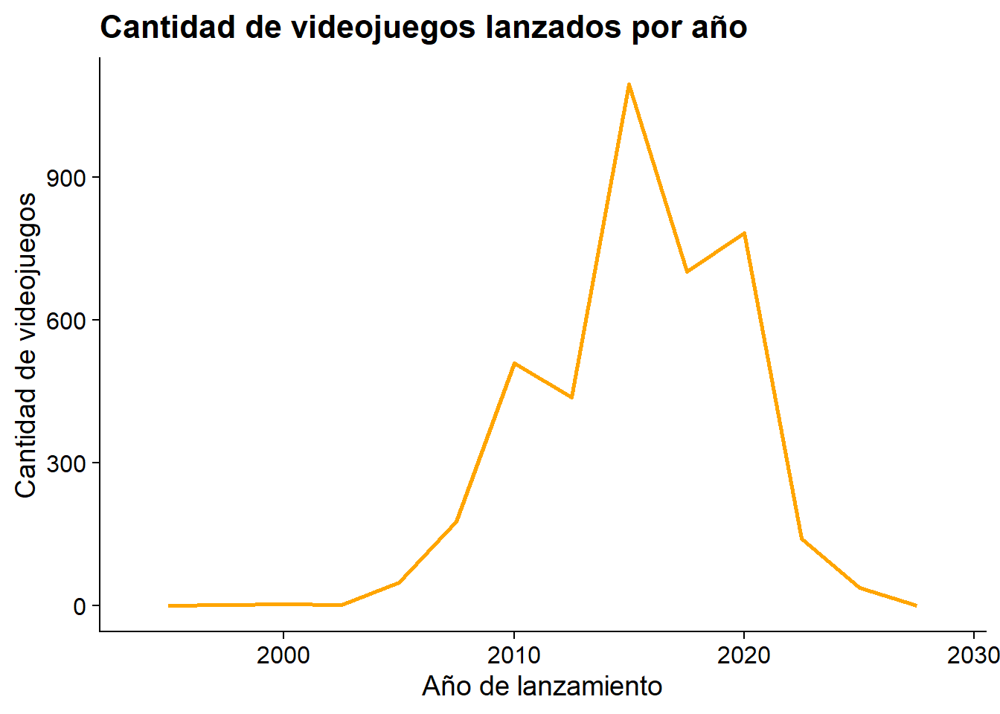
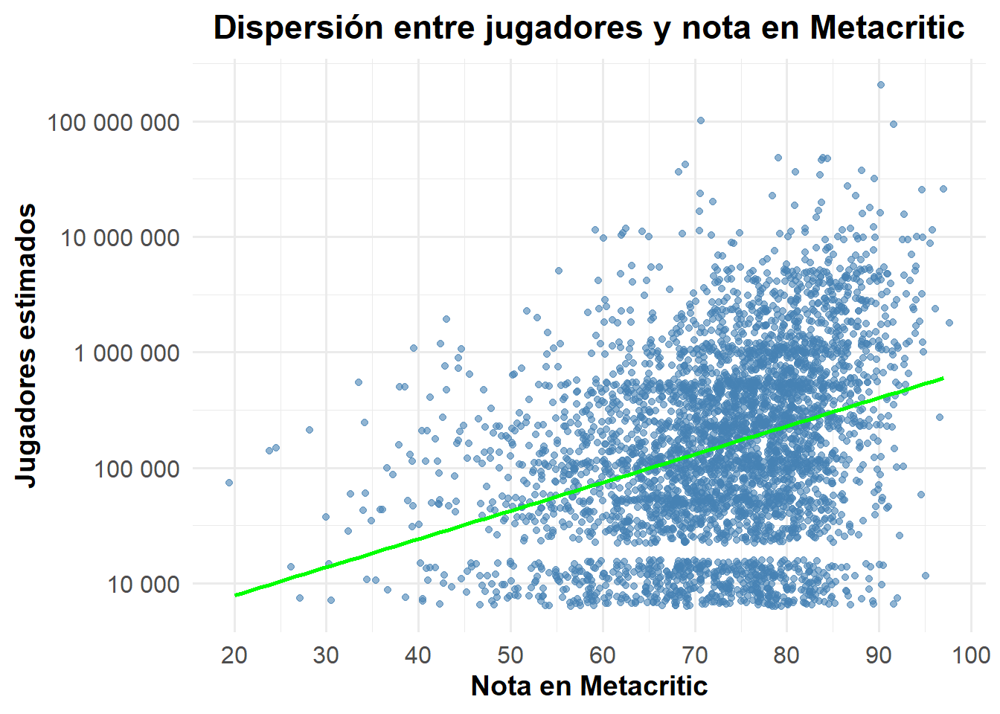
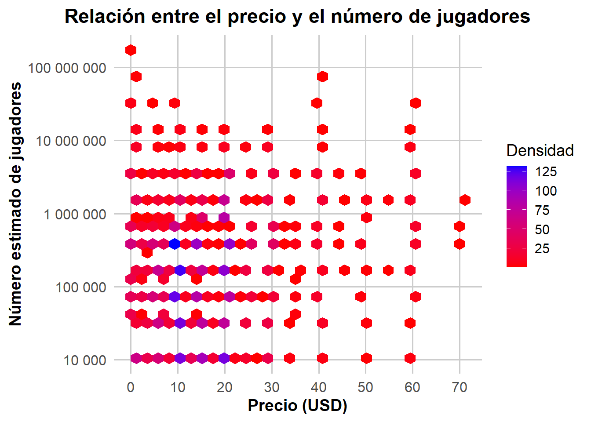
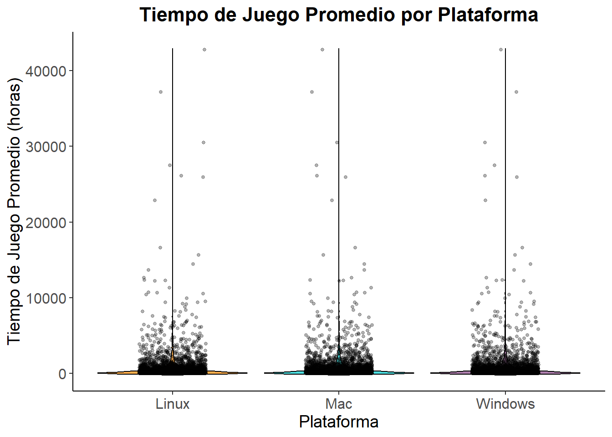
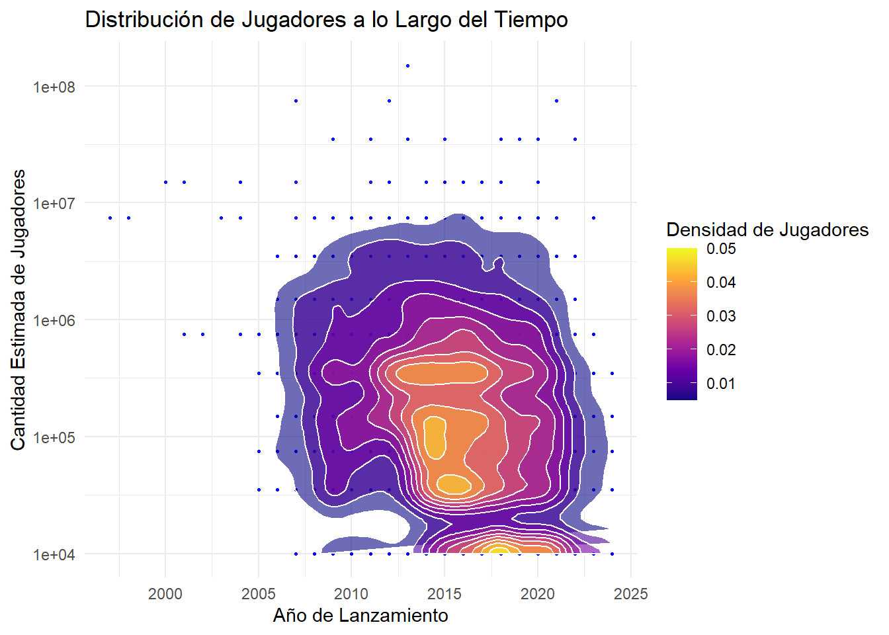

| Tipo | Tema_General | Tema_Especifico | Titulo | Año | Autores |
|---|---|---|---|---|---|
| Teórico | Videojuegos y cultura japonesa | Análisis de éxito global de videojuegos japoneses | Manga, anime y videojuegos japoneses: análisis de los principales factores de su éxito global | 2012 | Hevia, Carme Mangiron |
| Metodológico | Adicción a videojuegos | Uso de videojuegos como estrategia de afrontamiento emocional | Problematic video game use as an emotional coping strategy | 2019 | Di Blasi, Maria |
| Teórico | Diversión en videojuegos | Concepto de diversión a través del análisis de videojuegos | ¿Qué hace divertido un videojuego? Acercamiento al concepto de diversión | 2015 | Guerrero Pastor, Marta |
| Temático | Videojuegos y política | Ludoficción política en Steam | LA POLÍTICA A LA QUE JUGAMOS. CULTURA, VIDEOJUEGOS Y LUDOFICCIÓN POLÍTICA EN STEAM | 2024 | STEAM, ON |
| Metodológico | Industria de videojuegos | Análisis de la industria del videojuego en España | Análisis de la industria del videojuego en España | 2024 | Autor Desconocido |
| Metodológico | Marketing de videojuegos | Plan de marketing para empresas de videojuegos | Plan de marketing para una empresa de videojuegos | 2024 | Autor Desconocido |
| Temático | Innovación en videojuegos | Innovación en productos y éxito en videojuegos | Innovate or game over? Examining effects of product innovativeness on video game success | 2022 | Handrich, Franziska; Heidenreich, Sven; Kraemer, Tobias |
| Metodológico | Experiencia de juego | Procesamiento predictivo y disfrute de la incertidumbre en videojuegos | Mastering uncertainty: A predictive processing account of enjoying uncertain success in video game play | 2022 | Deterding, Sebastian; Andersen, Marc Malmdorf; Kiverstein, Julian |
| Teórico | Psicología del juego | Experiencia óptima (flow) | Flow: The Psychology of Optimal Experience | 1990 | Csikszentmihalyi, Mihaly |
| Metodológico | Análisis de comportamiento | Análisis experimental del comportamiento | The Behavior of Organisms: An Experimental Analysis | 1938 | Skinner, B.F. |
| Temático | Juegos móviles y mercado | Estudio de mercado sobre juegos para móviles y gaming | Estudio de mercado sobre juegos para móviles y gaming | 2024 | We Are Testers |
2 Bitácora 2
2.1 Comando 1:
.png)
2.2 Comando 2:
.png)
2.3 Comando 3:
.png)
3 Parte de Planificación
3.1 Ordenamiento de la Literatura
4 Enlaces de la Literatura
En su obra “The Behavior of Organisms” (1938), B.F. Skinner plantea que el comportamiento se regula mediante un proceso de selección por consecuencias, centrado en la interacción estímulo-respuesta. Su enfoque analiza cómo los organismos cambian su conducta por los resultados obtenidos de sus acciones. Por otra parte, este planteamiento contrasta con la teoría de Csikszentmihalyi (1990), ya que él propone que el comportamiento no depende de las consecuencias inmediatas, sino también del nivel de inmersión que se logra cuando hay un equilibrio entre los desafíos y las habilidades. Mientras Skinner pone énfasis en respuestas automáticas ante estímulos, Csikszentmihalyi examina estados de conciencia elevados, como el “flujo”. Además, la obra de Skinner ofrece una base experimental sólida sobre cómo el refuerzo modifica el comportamiento, y el enfoque de Csikszentmihalyi complementa este modelo al destacar la importancia de la motivación intrínseca y el disfrute de la actividad como factores clave.
En “Flow: The Psychology of Optimal Experience” (1990), Mihaly Csikszentmihalyi desarrolla el concepto de “flujo”, un estado mental caracterizado por la plena concentración y disfrute de una actividad cuando las habilidades de la persona se alinean con el nivel de desafío de la tarea. El concepto de “flujo” guarda una conexión relevante con los estudios de Deterding et al. (2022) sobre los videojuegos, que señalan que la incertidumbre es crucial para que los jugadores disfruten. Por otro lado, ambos enfoques destacan la importancia de mantener un equilibrio: en el caso del “flujo”, entre habilidad y desafío; y en los videojuegos, entre previsibilidad e incertidumbre. En la industria de los videojuegos, mantener un equilibrio entre las habilidades del jugador y el reto que ofrece el juego es esencial para garantizar una experiencia satisfactoria y prolongada, esto con el fin del que el jugador se sienta cómodo realizando los desafíos, pero no tan cómodo como para que considere el juego demasiado fácil o absurdo.
¿El estudio “Innovate or Game Over?” (2022), de Handrich et al., analiza cómo la innovación en las mecánicas y la presentación de los videojuegos impacta directamente su éxito en el mercado. Los autores destacan que las innovaciones en la jugabilidad pueden mejorar el rendimiento inicial de un juego. El argumento sobre la necesidad de innovar en los videojuegos se alinea con el análisis de Deterding et al., quienes subrayan la importancia de la incertidumbre y el procesamiento predictivo en la experiencia del jugador. Sin embargo, mientras Deterding et al. se enfocan en aspectos psicológicos, Handrich et al. adoptan una perspectiva más comercial y destacando cómo la innovación en los videojuegos es clave para su competitividad en el mercado. Ambos estudios revelan que la innovación no solo es crucial en el diseño y las mecánicas de juego, sino también en la manera en que los jugadores experimentan a esos cambios. Mantener el equilibrio entre las expectativas del mercado y la experiencia del jugador resulta vital para asegurar el éxito de un videojuego a largo y corto plazo.
En el estudio “Mastering Uncertainty: A Predictive Processing Account of Enjoying Uncertain Success in Video Game Play” (2022), exploran cómo la incertidumbre puede influir en el disfrute de los videojuegos y se analiza cómo los jugadores manejan la incertidumbre, a través del procesamiento predictivo, lo cual mantiene su interés en el juego. Deterding et al proponen que la incertidumbre es un elemento esencial para garantizar una buena experiencia al jugador, además sugieren que estos desarrollan expectativas sobre los resultados lo que les permite navegar la incertidumbre de manera efectiva. Y se dice que la incertidumbre, en lugar de disminuir la satisfacción, mantiene a los jugadores comprometidos y motivados lo que mejora su inmersión en el juego. Por otro lado, al entender el papel de la incertidumbre los desarrolladores deben considerar mecánicas del juego que puedan provocar respuestas cognitivas que fomenten el disfrute. Además, los diseñadores pueden crear experiencias más dinámicas que se adapten a las expectativas cambiantes de los jugadores.
“The Impact of Video Games on the Players Behaviors: A Survey” (2019) de Quwaider, et al., es un estudio que per sé contrasta los efectos negativos y positivos de los videojuegos tratando de hacerlo desde una óptica generalizada. En este estudio, los autores mencionan aspectos negativos de los videojuegos como: adicción a los videojuegos y recaídas y conductas violentas. Este último aspecto se alinea con lo encontrado por Di Blasi(2020) en su análisis sobre los juegos MMROPG; género también mencionado en este estudio. De forma más general, se menciona que los videojuegos de carácter competitivo son los gatilleros de este tipo de conductas antisociales, lo cual tiene mucho sentido si se compara con los eventos deportivos más importantes en el país; como lo es alguna final entre equipos de primera división, cuyos fanáticos son capaces de violentarse entre sí dado que su equipo perdió (ganó).
Un estudio que es clave para entender el mercado en la actualidad es el de los sPorts o deportes electrónicos. Gracias al aporte de Sergio Mesonero (2019) en su artículo “eSports: pasado y presente de las competiciones de videojuegos”, se puede llegar a incluso simpatizar con lo que representa esta industria. No es muy difícil notar en redes sociales como muchas personas están en contra del financiamiento que se les da a las competencias electrónicas, y no es de extrañar pues la sociedad está acostumbrada a presenciar competiciones donde el contacto físico es clave. La simpatía puede venir de parte del reconocimiento que se le hace a los competidores, quienes tienen que entrenar de manera frecuente sus artificios videojueguiles. No es difícil notar que este fenómeno involucra un sistema de recompensa basado en la incertidumbre, (características evocadas en el estudio “Mastering Uncertainty: A Predictive Processing Account of Enjoying Uncertain Success in Video Game Play” (2022)) en donde las consecuencias de la misma son más severas (se gana o incluso se pierde dinero).
“Unravelling the complexity of the Video Game Industry: An integrative framework and future research directions” (2023) es un estudio cuyo enfoque es el mercado de los videojuegos desde un punto mucho más económico. Los autores argumentaron las dimensiones monetarias que abarca esta industria comprendida en millones de dólares. Los números son buenos indicadores para argumentar la existencia de mercados derivados de los videojuegos, como los son los sPorts mencionados por Sergio Mesonero(2019) en su artículo “eSports: pasado y presente de las competiciones de videojuegos”. De acuerdo a Goh Edward et al., el mercado de los videojuegos se mantendrá fuerte y se espera que siga creciendo. Según la hipótesis del crecimiento en este mercado, los jugadores esperarían juegos de calidad superior y más ideas innovadoras como lo puede ser la creación de una nueva consola de sobremesa.
Un contraste interesante se da entre la entrevista realizada por Stuart, K., (2008) “Interview: the science and art of Metacritic” y el artículo de Imad, Khan., (2021) “Do Metacritic scores affect game sales?”. Mientras que el entrevistado (quien es un experto en crítica de videojuegos) asegura que los beneficios de la crítica podrían ayudar a mejorar las ventas y el contento de los videojugadores, Khan Imad concluye que esto no es cierto mediante la conclusión de un estudio realizado en 2012 que involucraba las ventas de videojuegos con sus notas en Metacritic. Sin embargo, en la entrevista se habla de algo que es muy cierto: las notas en Metacritic podrían incentivar a las empresas desarrolladoras de videojuegos a innovar y/o mejorar la calidad de sus productos. Además, las conclusiones de Khan Imad se basan en solamente un estudio, por lo que es perfectamente cuestionable en muchos aspectos.
5 Análisis Estadísticos
5.1 Análisis Descriptivo
El resumen de cada variable constará de: la mediana, el promedio, mínimo y máximo, rango y desviación estándar. Existirán variables como la fecha de lanzamiento en donde se omitirán algunas mediciones.
5.1.1 Resúmenes:
5.1.2 Gráficos:
ggplot(clean_database, aes(x = clean_database$ReleaseDate)) +
geom_freqpoly(alpha = 20, binwidth = 2.5, color = "black", size = 0.9) +
labs(x = "Año de lanzamiento", y = "Cantidad de videojuegos", title = "Cantidad de videojuegos lanzados por año") +
cowplot::theme_cowplot()
ggplot(clean_database, aes(x = Metacritic.score, y = EstimatedPlayers)) +
geom_point(alpha = 20, color = "black", position = position_jitter()) +
scale_y_log10(labels = scales::number) +
scale_x_continuous(breaks = seq(0, 100, by = 10)) +
labs(title = "Dispersión entre las variables jugadores estimados y nota en Metacritic", x = "Nota en Metacritic", y = "Jugadores estimados") +
cowplot::theme_cowplot() +
geom_smooth(method = "lm", se = FALSE,color = "blue")
ggplot(clean_database, aes(x = Price, y = EstimatedPlayers)) +
geom_hex(alpha = 0.5, size = 1, position = position_jitter(width = 0.1, height = 0.1)) +
scale_y_log10(labels = scales::number) +
scale_x_continuous(breaks = seq(0, 70, by = 10)) +
labs(title = "Gráfico de dispersión entre el número de jugadores y el precio",
x = "Precio",
y = "Número de jugadores",
fill = "Gradiente de densidad") +
cowplot::theme_cowplot() +
scale_fill_gradient(low = "blue", high = "red")
playtime_platforms_long <- clean_database %>%
select(Windows, Mac, Linux, Average.playtime.forever) %>%
pivot_longer(cols = c(Windows, Mac, Linux), names_to = "Plataform", values_to = "Supported")
ggplot(playtime_platforms_long, aes(x = Plataform, y = Average.playtime.forever, fill = Plataform)) +
geom_violin(trim = FALSE, alpha = 0.7, color = "black") +
geom_jitter(width = 0.2, alpha = 0.3, color = "black", size = 1) +
scale_fill_manual(values = c("darkorange", "darkturquoise", "orchid4")) +
labs(
title = "Tiempo de Juego Promedio por Plataforma",
x = "Plataforma",
y = "Tiempo de Juego Promedio (horas)"
) +
theme_classic(base_family = "Arial") +
theme(
plot.title = element_text(face = "bold", size = 16, hjust = 0.5),
axis.title = element_text(size = 14),
axis.text = element_text(size = 12),
legend.position = "none",
panel.grid.major = element_line(color = "gray85")
)
ggplot(clean_database, aes(x = ReleaseDate, y = EstimatedPlayers)) +
geom_point(alpha = 0.9, color = "blue", size = 0.5) +
stat_density_2d(aes(fill = after_stat(level)), geom = "polygon", color = "white", alpha = 0.6) +
scale_fill_viridis_c(option = "plasma", name = "Densidad de Jugadores") +
scale_y_log10() +
labs(
title = "Distribución de Jugadores a lo Largo del Tiempo",
x = "Año de Lanzamiento",
y = "Cantidad Estimada de Jugadores"
) +
theme_minimal() 
5.2 Propuesta Metodológica
5.2.1 Nuevos Métodos
Se formularán varios métodos que permitirán analizar el Steam Games Dataset y predecir el éxito de los videojuegos en función de variables clave:
5.2.2 Análisis Exploratorio de Datos (EDA)
Objetivo: Obtener una comprensión inicial del dataset, identificando patrones, anomalías y relaciones entre variables.
Variables a analizar:
- Price: Precio del videojuego.
- Positive: Número de reseñas positivas.
- Negative: Número de reseñas negativas.
- User score: Calificación otorgada por los usuarios.
- Metacritic score: Calificación del videojuego en Metacritic.
- Estimated players: Número estimado de propietarios/jugadores del videojuego.
- Release Date: Fecha de lanzamiento del videojuego.
Fuente: Wickham y Grolemund (2017)
5.2.3 Regresión Lineal Múltiple
Objetivo: Predecir el número estimado de propietarios de un videojuego (Estimated owners) utilizando diversas variables numéricas.
Ecuación del Modelo: \[ \text{Estimated owners} = \beta_0 + \beta_1 (\text{User score}) + \beta_2 (\text{Price}) + \beta_3 (\text{Positive}) + \epsilon \] - \((\beta_0)\): Intercepto del modelo.
- \((\beta_1, \beta_2, \beta_3)\): Coeficientes de las variables predictoras.
Descripción de las Variables:
- User score: Calificación otorgada por los usuarios, que puede influir en la popularidad del videojuego.
- Price: Precio del videojuego, que puede afectar su accesibilidad y, en consecuencia, el número de propietarios.
- Positive: Número de reseñas positivas, un indicador que refleja la aceptación del juego por parte de la comunidad.
El modelo de regresión lineal múltiple proporciona una herramienta poderosa para comprender cómo estas variables interactúan y afectan el número estimado de propietarios de un videojuego.
Fuente: James et al. (2021)
5.3 Construcción de Fichas de Resultados
Ficha I:
■ Nombre del hallazgo: Relación entre jugadores y la crítica de juegos.
■ Resumen en una oración: Los jugadores prefieren videojuegos con mejor nota en Metacritic.
■ Principal característica: Relación positiva entre las notas de Metacritic y cantidad de jugadores.
■ Posibles desafíos: Entender el porqué de esta relación positiva (indicada por la pendiente de la línea de tendencia del gráfico 3), pues se está frente a un fenómenos subjetivo que requerirá de análisis alineados a la idea de la subjetividad. Las encuentas podrían servir.
■ Resumen de un párrafo: La línea de tendencia de la gráfica 7.2 es clara; existe una relación positiva entre las notas de Metacritic y la cantidad de jugadores por juego. Este resultado a priori era de esperarse, sin embargo, dada la subjetividad del resultado puede ser difícil concluir con un porqué de manera exacta.
Ficha II:
■ Nombre del hallazgo: Bastantes juegos lanzados en el período 2014-2019.
■ Resumen en una oración: La mayoría de juegos son pertenecen al período 2014-2019.
■ Principal característica: Como se puede observar en el gráfico 7.1, la mayoría de juegos en Steam se ubican en el quarto de la década del 2010.
■ Posibles desafíos: Una explicación a este fenómeno se podría hacer por el método de descarte. Resultaría factible analizar porqué los juegos lanzados antes y después del período mencionado son pocos.
■ Resumen de un párrafo: Se halló que la mayoría de los videojuegos se encuentran en este rango temporal. Para explicar esto, un método coherente será el de tratar de explicar porqué no salieron tantos juegos en las otras épocas. Una explicación parcial podría ser la pandemia, sin embargo, son solo conjeturas y se requerirán analizar más estudios.
Ficha III:
■ Nombre del hallazgo: Relación negativa entre el número de jugadores y el precio de los videojuegos.
■ Resumen en una oración: Mientras más caro es un juego, menos jugadores tendrá.
■ Principal característica: Los juegos baratos atraen más jugadores.
■ Posibles desafíos: ¿Habrán características más haya del precio que los juegos más caros no tienen? Esta pregunta surge ya que se sabe que entre más caro es algo, de mejor calidad suele ser. Entender esta problemática cuestión será crucial en el análisis profundo de preferencias.
■ Resumen de un párrafo: El gráfico 7.3 es el que llevó al grupo a este importante hallazgo. Acaecen dudas acerca de este resultado relacionado a las preferencias y características que tienen los juegos más baratos y más caros. De acá surge la idea de usar como variable importante la de los géneros de videojuegos, se conjetura que esto tiene mucho que ver, pues en la base de datos está el videojuego Dota 2, el cual es un juego competitivo, y como se mencionó en varias fichas de literatura: este tipo de juegos es un gran atractor de masas (Di Blasi, 2019).
Ficha IV
■ Nombre del hallazgo/resultado: Comparación del tiempo de juego promedio por plataforma.
■ Resumen en una oración: El tiempo de juego promedio varía considerablemente entre plataformas, con una mayor concentración en Windows.
■ Principal característica: Diferencia notable en la distribución del tiempo de juego entre usuarios de Windows, Mac y Linux, con Windows dominando en cantidad de horas. Se refleja en el gráfico 7.4.
■ Posibles desafíos: Las diferencias en tiempo de juego entre plataformas podrían estar influenciadas por factores más allá de la disponibilidad de títulos, como la optimización y características específicas de cada plataforma. Comprender cómo estos factores afectan la experiencia del usuario será fundamental para maximizar la audiencia en diferentes plataformas.
■ Resumen en un párrafo: El análisis de la distribución del tiempo de juego promedio por plataforma revela que los usuarios de Windows tienden a tener un tiempo de juego mucho mayor en comparación con los de Mac y Linux. Esto puede deberse a la disponibilidad limitada de ciertos juegos, la optimización de rendimiento para diferentes sistemas operativos o incluso las preferencias inherentes de cada grupo de usuarios. Abordar estos desafíos podría ayudar a los desarrolladores a diversificar su audiencia y mejorar la experiencia del usuario en plataformas menos representadas.
Ficha V:
■ Nombre del hallazgo/resultado: Tendencia creciente en la cantidad estimada de jugadores. ■ Resumen en una oración: La cantidad estimada de jugadores ha mostrado un aumento significativo desde el año 2000.
■ Principal característica: Existe una concentración notable de jugadores en los años 2010-2015. Se refleja en el gráfico 7.5.
■ Posibles desafíos: Las diferencias en la cantidad de jugadores podrían estar relacionadas con diversos factores, como el lanzamiento de juegos destacados o cambios en las tendencias del mercado, por lo que identificar estos factores es crucial para entender mejor el comportamiento de los jugadores.
■ Resumen en un párrafo: El análisis de la distribución de jugadores estimados a lo largo del tiempo revela una tendencia creciente en la cantidad de jugadores desde el año 2000, con picos significativos en años como 2010 y 2015. Esto dice que el interés por los videojuegos ha aumentado considerablemente, posiblemente influenciado por el lanzamiento de títulos populares y el crecimiento de plataformas de juego en línea.
James, Gareth, Daniela Witten, Trevor Hastie, y Robert Tibshirani. 2021. An Introduction to Statistical Learning with Applications in R. Springer. https://www.statlearning.com.
Wickham, Hadley, y Garrett Grolemund. 2017. R for Data Science: Import, Tidy, Transform, Visualize, and Model Data. O’Reilly Media. https://r4ds.had.co.nz.